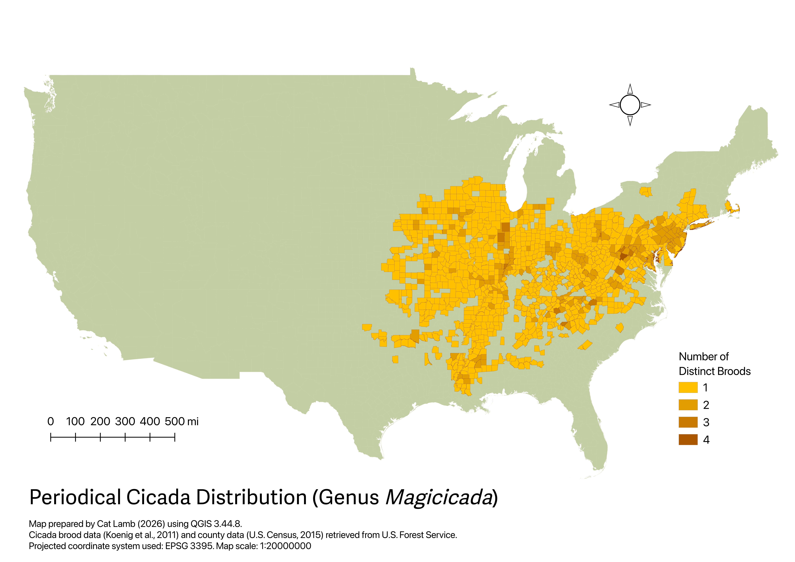

This map was prepared in 2026 using QGIS 3.44.8. Data was retrieved from the U.S. Forest Service depicting county boundaries and cicada brood distributions. These layers were joined and styled to reflect the number of periodical cicada broods in each county. The map was then exported in a JPEG format and optimized for web use in Visual Studio Code.
The goal of this project was to create a straightfoward static map that shows the distribution and overlap of periodical cicada broods across the United States. A cicada "brood" refers to a population of periodical cicadas that emerges simultaneously in a similar area, generally every 13 or 17 years. It is useful for both the general public and scientists to understand where these insects emerge and areas where they may encounter them more frequently. Still, it is important to note that the more saturated areas of the map do not necessarily reflect areas of higher cicada density; simply areas where multiple broods have been observed.
Both data sources utilized in this project were accessed through the U.S. Forest Service. The county data was from the Forest Inventory and Analysis (FIA) program (FIA Landcover County Estimates 2015), which collects data on forest conditions across the United States. Their county boundaries (which are utilized in this project) are derived from the U.S. Census. The cicada brood data (Periodical Cicada Broods) was collected through a combination of multiple sources compiled into a dataset for a publication by Koenig, Ries, Olsen, & Liebhold (2011) which was then made into a feature layer for public use. More information on these datasets is available at the individual source links above or the GitHub repository for the project linked below.